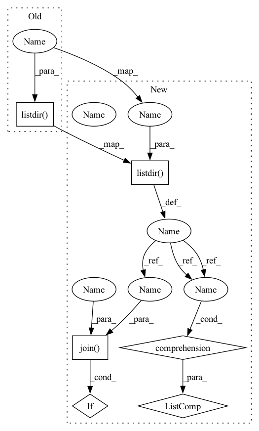

Pattern ID :4410
Before Change
root = os.path.join(
self.root, self.metadata[self.version]["directory"], f"{index:06}"
)
subdirs = os.listdir(root )
subdirs = random.sample(subdirs, self.seasons)
images = [self._load_patch(root, subdir) for subdir in subdirs]
After Change
root = os.path.join(
self.root, self.metadata[self.version]["directory"], f"{index:06}"
)
subdirs = [f for f in os.listdir(root) if os.path.isdir(os.path.join(root, f))]
subdirs = random.sample(subdirs, self.seasons)
images = [self._load_patch(root, subdir) for subdir in subdirs]
In pattern: SUPERPATTERN
Frequency: 3
Non-data size: 6
Instances Fragment ID: 16195159
Project Name: microsoft/torchgeo
Commit Name: 2f4dc779ec176a41bed19086b3681ce64d2e7814
Time: 2023-04-14
Author: 22203655+isaaccorley@users.noreply.github.com
File Name: torchgeo/datasets/seco.py
M Class Name: SeasonalContrastS2
N Class Name: SeasonalContrastS2
M Method Name: __getitem__(2)
N Method Name: __getitem__(2)
M Parent Class: NonGeoDataset
N Parent Class: NonGeoDataset
M File Name: torchgeo/datasets/seco.py
N File Name: torchgeo/datasets/seco.py
M Start Line: 126
M End Line: 129
N Start Line: 126
N End Line: 129
Before Change
return round(df["ViolatingObjects"].mean(), 1)
def camera_with_most_violations(self):
log_dir = os.getenv("LogDirectory")
cameras = os.listdir( log_dir)
if ".keep" in cameras:
cameras.remove(".keep")
cameras_violations = {}
for camera_id in cameras:After Change
return round(df["ViolatingObjects"].mean(), 1)
def camera_with_most_violations(self):
log_dir = os.getenv("LogDirectory")
cameras = [directory for directory in os.listdir(log_dir) if os.path.isdir(os.path.join(log_dir, directory))]
cameras_violations = {}
for camera_id in cameras:
file_path = os.path.join(log_dir, camera_id, "objects_log", "report.csv")
if os.path.exists(file_path): Fragment ID: 16195161
Project Name: neuralet/smart-social-distancing
Commit Name: 967a430c6c4b66e8af318b0ac0962303fcc4db37
Time: 2020-10-05
Author: renzodgc12@gmail.com
File Name: libs/utils/reports.py
M Class Name: ReportsService
N Class Name: ReportsService
M Method Name: camera_with_most_violations(1)
N Method Name: camera_with_most_violations(1)
M Parent Class:
N Parent Class:
M File Name: libs/utils/reports.py
N File Name: libs/utils/reports.py
M Start Line: 224
M End Line: 228
N Start Line: 224
N End Line: 225
Before Change
if self.zone_path:
elements = os.listdir(self.zone_path)
for elt in elements:
path_elt = os.path.join(self.zone_path, elt)
if os.path.isdir(path_elt):
self.elements[elt] = os.listdir( path_elt)
else:
self.elements[elt] = ""
def create_fields(self, fields_names):After Change
if self.zone_path:
elements = os.listdir(self.zone_path)
for elt in elements:
path_elt = os.path.join(self.zone_path, elt)
if os.path.isdir(path_elt):
self.elements[elt] = [elt for elt in os.listdir(path_elt) if os.path.isfile(os.path.join(path_elt,elt)) and "encoding" not in elt and "sqlite" not in elt]
else:
self.elements[elt] = ""
def create_fields(self, fields_names): Fragment ID: 16195160
Project Name: yassinekdi/naimai
Commit Name: 6aca2f362ddb0c3de6a209083dca1f2fea6d7041
Time: 2022-08-03
Author: keptsa@yahoo.fr
File Name: pipelines/zones.py
M Class Name: Zone
N Class Name: Zone
M Method Name: get_elements(1)
N Method Name: get_elements(1)
M Parent Class:
N Parent Class:
M File Name: pipelines/zones.py
N File Name: pipelines/zones.py
M Start Line: 41
M End Line: 43
N Start Line: 41
N End Line: 43